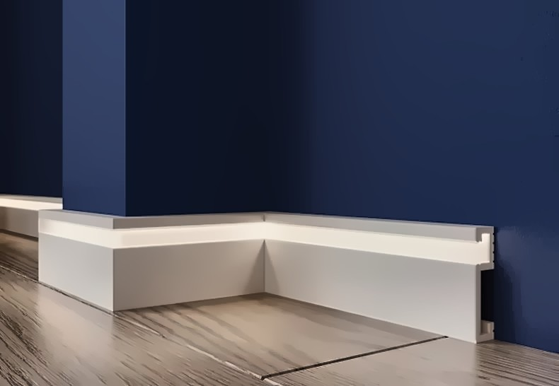
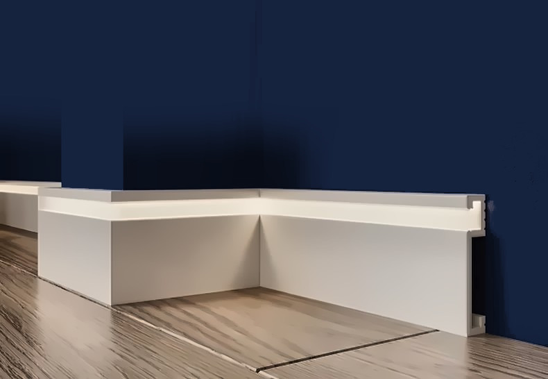
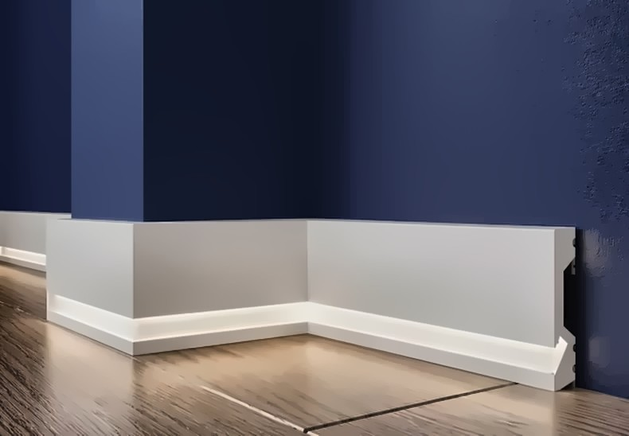

Плинтус с подсветкой — напольный и потолочный
Плинтус с подсветкой из полистирола высокой плотности (дюрополимера) под покраску: напольные плинтусы A11-80, A11-100 и A12-100 с пазом под LED-ленту — свет стелется по полу; потолочный плинтус A503 с нишей под ленту — скрытая подсветка и «парящий» потолок. Длина 2 м, монтаж на клей, лента вставляется после покраски. Цена за штуку, наличие в Санкт-Петербурге, доставка по СПб и Ленобласти.




Цены предварительные, за штуку, без НДС. Нажмите на товар — там фото, 3D, профиль, размеры, цена и заявка.
Вопросы и ответы
Какая LED-лента подходит?
Обычная светодиодная лента на 12 или 24 В шириной до 10 мм. Точную ширину и глубину паза смотрите на чертеже профиля на странице плинтуса. Блок питания прячут в нише, за мебелью или в коробе.
Как монтировать плинтус с подсветкой?
Так же, как обычный — на монтажный клей на водной основе, углы под 45°. Сначала плинтус клеят и красят, затем вставляют ленту и проводят питание к ближайшей розетке.
Можно ли красить плинтус с подсветкой?
Да, любой краской для стен на водной основе. Красят до установки ленты; паз под ленту можно оставить белым или покрасить вместе со всем профилем.
Чем напольный плинтус с подсветкой отличается от потолочного?
Напольные A11-80, A11-100 и A12-100 светят вдоль пола — подсветка коридора, спальни, лестницы. Потолочный A503 крепится к стене с отступом от потолка, лента светит вверх — получается «парящий» потолок; подходит и для натяжного потолка.
Сколько нужно?
Периметр комнаты без дверных проёмов ÷ 2 м, плюс 10 % на подрезку. Лента берётся той же длины.
Заявка
Ответим с ценой, наличием и сроком в рабочее время. Быстрее всего — написать в чат (кнопка «Чат» внизу справа) или заказать обратный звонок — перезвоним сами.
Оставьте номер — перезвоним в рабочее время, расскажем про наличие, цену и доставку. Укажите в комментарии, когда удобно принять звонок.
Менеджер подтвердит наличие и стоимость доставки и пришлёт ссылку на оплату картой или через СБП — оплата до отгрузки, электронный чек придёт на e-mail. Компаниям и ИП — счёт. Самовывоз со склада в СПб — бесплатно. Об оплате и возврате